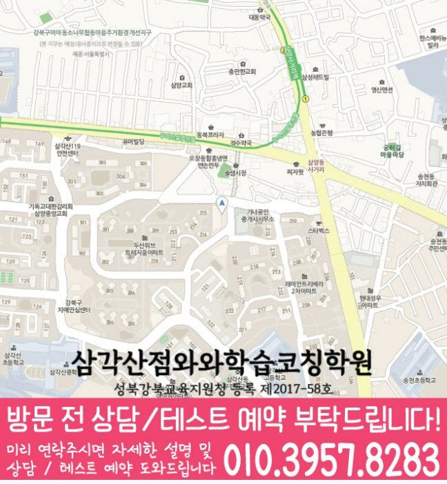

30초 핵심 안내
미아동 고등 영수학원 선택 전 확인할 기준
서울 강북구 미아동의 고등 영수학원 정보로서 미아동 고등 영수학원은 영어·수학 진단, 학교 일정 반영, 복습과 재풀이 기준을 설명합니다. 주소는 서울 강북구 미아동 811-9 두산위브테라스파크 상가 402/403호이며, 학원설명회에 관해 학부모가 물어볼 질문도 제시합니다. 특정 성적 상승이나 입시 결과는 단정하지 않습니다.
High School English & Math
서울 강북구 미아동 고등 영수학원 정보 페이지입니다. 고3 학생의 영어·수학 취약점, 학교 시험 준비, 학원설명회 판단 기준, 학부모 상담 질문과 서울 강북구 미아동 811-9 두산위브테라스파크 상가 402/403호 방문 전 확인점을 안내합니다.
30초 핵심 안내
서울 강북구 미아동의 고등 영수학원 정보로서 미아동 고등 영수학원은 영어·수학 진단, 학교 일정 반영, 복습과 재풀이 기준을 설명합니다. 주소는 서울 강북구 미아동 811-9 두산위브테라스파크 상가 402/403호이며, 학원설명회에 관해 학부모가 물어볼 질문도 제시합니다. 특정 성적 상승이나 입시 결과는 단정하지 않습니다.
수업 안내 이미지

센터 위치 안내

미아동 고등 영수학원을 알아보는 서울 강북구 미아동 가정이라면 결론은 분명합니다. 고3 학생에게 필요한 것은 영어의 어휘·구문·독해 문제와 수학의 개념·유형·오답 문제를 구분해 진단하고, 학교 일정에 맞춰 복습 주기를 만드는 수업입니다. 이 글은 영어 문법 용어는 알지만 실제 문장 해석에 연결하지 못하는 상황, 수학 개념은 설명할 수 있어도 낯선 유형에서 첫 식을 세우지 못하는 상황, 그리고 완벽하게 이해한 뒤 넘어가려다 전체 진도가 늦어지는 생활 패턴을 가진 학생을 기준으로 학원설명회 확인법까지 바로 답합니다.
서울 강북구 미아동에서 미아동 고등 영수학원을 살필 때에는 과목명만 비교하기보다 실제 이동 경로와 가능한 수업 학년을 함께 확인해야 합니다. 제공된 센터 위치는 서울 강북구 미아동 811-9 두산위브테라스파크 상가 402/403호이며, 영어와 수학을 함께 확인할 수 있는 학년은 고1·고2·고3입니다.
삼각산고·미양고·영훈고·혜화여고은 미아동 센터 자료에 포함된 학교 참고 정보입니다. 같은 학교 학생이라도 취약 단원과 공부 시간이 다르므로 학교명만으로 수업 방식을 정하지 않고 개별 자료를 바탕으로 상담합니다.
미아동 수업 안내의 기준 센터는 와와학습코칭센터 삼각산점이며 자료에 기재된 등록 정보는 성북강북교육지원청 등록 제2017-58호입니다. 상담 전에는 주소·학년·교습비를 함께 대조해 실제 등원 조건을 판단합니다.
서울 강북구 미아동에서 학원설명회를 비교할 때는 첫 상담에서 학생의 최근 교재, 시험지, 오답 기록을 실제로 검토하는지 보는 것이 가장 실용적인 출발점입니다. 미아동 고등 영수학원 상담 기록에는 초기 진단 결과가 첫 주 계획에 반영되는지와 체험 수업이 정규 수업과 같은 방식으로 운영되는지를 각각 남겨, 나중에 다른 선택지와 같은 조건으로 비교해 보십시오. 미아동 학부모가 기억할 점은 학원설명회의 명칭이 아니라 적용 방식이며, 상담 분위기가 좋았다는 인상만으로 결정하지 말고 학생이 실제로 수행할 주간 과제와 피드백 경로까지 확인하는 편이 안전합니다.
미아동 고등학생의 주간 루틴은 수업일과 비수업일을 다르게 설계해야 합니다. 미아동 고등 영수학원 수업일에는 배운 내용을 짧게 회상하고 질문을 표시하며, 다음 날에는 영어 어휘·구문과 수학 핵심 오답을 다시 확인하고, 주말에는 단원 혼합 문제와 한 주 기록을 점검하는 흐름이 적합합니다. 완벽하게 이해한 뒤 넘어가려다 전체 진도가 늦어지는 학생에게는 완벽한 계획보다 미완료 이유를 한 줄로 남기는 규칙이 중요하며, “시험 후 분석 결과를 다음 시험 계획에 바로 반영하기”를 주간 체크 기준으로 두어야 합니다.
미아동 고등 영어 수업은 단어 시험과 문제 풀이량만으로 적합성을 판단하기 어렵습니다. 영어 문법 용어는 알지만 실제 문장 해석에 연결하지 못하는 학생이라면 어휘 회상, 문장 구조 표시, 문단 요약, 정답 근거 찾기의 어느 단계에서 시간이 늘어지는지 먼저 확인해야 합니다. 미아동 고등 영수학원에서는 한 지문을 풀고 끝내기보다 틀린 선택지의 이유를 말하게 하고, 다음 날 핵심 문장을 다시 해석하며, 일주일 뒤 비슷한 구조를 새 지문에서 찾는 흐름이 필요합니다. 이렇게 해야 내신 암기와 모의고사 독해가 서로 분리되지 않습니다.
미아동 고등 영수학원의 고등 수학 관리가 이번 고3 학생에게 맞으려면 풀이 과정이 기록으로 남아야 합니다. 수학 개념은 설명할 수 있어도 낯선 유형에서 첫 식을 세우지 못하는 모습은 답만 채점해서는 원인이 보이지 않으므로, 미아동 수업에서는 문제를 읽고 무엇을 구하는지 말하기, 사용할 개념을 고르기, 식을 세우기, 검산하기를 차례로 확인하는 편이 좋습니다. 매주 새 진도와 누적 복습의 비율을 정하고, 시험 전에는 섞인 문항을 제한 시간 안에 풀어 전환 기준까지 연습해야 합니다.
제공된 수업 학교 정보에는 “삼각산고”, “미양고”가 기재되어 있습니다. 다만 서울 강북구 미아동 고등 영수학원이 학교별 대비를 한다는 설명은 실제 자료 반영 방식으로 확인해야 합니다. 미아동 상담 때 최근 시험 범위와 프린트, 서술형 감점 흔적을 가져가면 영어의 암기·변형 비중과 수학의 유형·풀이 비중을 더 구체적으로 정할 수 있습니다. 학교 일정이 바뀌면 주간 계획도 조정되는지, 시험 뒤 분석이 다음 단원 복습으로 이어지는지도 물어보십시오.
서울 강북구 미아동 고등 영수학원 관련 방문 위치는 서울 강북구 미아동 811-9 두산위브테라스파크 상가 402/403호로 안내되어 있습니다. 미아동 학부모가 상담 전에 확인할 항목은 실제 수업 시간표, 시작 가능한 반, 비용 구성, 보강 방식, 학부모 피드백 주기입니다. 학생은 최근 영어 지문과 수학 오답을 가져가 직접 설명해 보는 것이 좋고, 상담자는 어떤 자료를 왜 선택하는지 미아동 상담에서도 말할 수 있어야 합니다. 설명을 들은 뒤에는 바로 등록하기보다 지속 가능성을 미아동 가정의 생활표와 함께 검토하십시오.
Information Basis
이 페이지는 제공된 센터 정보와 지역별 원고를 바탕으로 작성했으며, 제공되지 않은 학교명이나 생활권 정보는 임의로 추가하지 않았습니다.
FAQ
미아동에서 영어 문법 용어는 알지만 실제 문장 해석에 연결하지 못하는 학생과 수학 개념은 설명할 수 있어도 낯선 유형에서 첫 식을 세우지 못하는 학생처럼 과목별 원인이 다른 경우, 영어와 수학을 따로 진단하고 주간 계획에서 연결하는 방식이 필요합니다. 미아동 고등 영수학원이 적합한지는 반 이름보다 진단 근거, 질문 시간, 오답 재풀이, 과제 조정 기록으로 판단하는 편이 좋습니다.
서울 강북구 미아동 고등 영수학원 상담에서는 영어에 필요한 짧은 반복과 수학에 필요한 긴 집중 시간을 다르게 배정해야 합니다. 두 과목 모두 완료율·정확도·오답 원인·다음 점검일을 남기되, 분량까지 똑같이 맞추지 않는 것이 미아동 학생 관리의 핵심입니다.
미아동 학생의 최근 시험지, 현재 교과서와 부교재, 학교 프린트, 수행평가 일정, 일주일 시간표를 준비하는 것이 좋습니다. 서울 강북구 미아동 상담에서는 영어 서술형 감점과 수학 풀이형 감점을 따로 확인하고, 시험 범위 공지 전후의 계획이 어떻게 달라지는지 물어보십시오.
학원설명회에 대해서는 오리엔테이션에서 과제·출결·보강 규칙을 안내하는지를 먼저 묻고, 답변이 학생의 실제 수업과 기록에 어떻게 적용되는지 확인해야 합니다. 미아동 고등 영수학원의 설명이 모호하면 적용 조건, 담당자, 점검 시점, 변경 절차를 다시 질문해 같은 기준으로 비교하는 편이 좋습니다.
제공 주소는 서울 강북구 미아동 811-9 두산위브테라스파크 상가 402/403호입니다. 미아동에서 이동 가능한 요일과 시간을 실제 생활표에 넣어 본 뒤, 운영 시간, 수강료, 반 정원, 교재비, 결석·보강 기준처럼 변동 가능한 정보는 방문 전 별도로 확인하십시오.
Parent Perspective
※ 아래 후기는 미아동 고등학생 가정이 활용할 수 있는 예시 표현으로, 실제 수강 후기와는 구분됩니다.
미아동 고등 영수학원 상담을 준비하며 아이의 영어 지문과 수학 오답을 직접 가져간 점이 좋았습니다. 설명을 듣고 끝내지 않고 첫 주 과제, 재풀이 날짜, 학부모가 확인할 항목을 미아동 상담 기록에 나눠 적을 수 있었습니다. 학원설명회에 대해서도 결과를 장담하는 말보다 운영 절차와 조건을 확인해 신중하게 결정할 수 있었습니다.